Liquid-cooled energy storage systems excel in industrial and commercial settings by providing precise thermal management for high-density battery operations. These systems use coolant circulation to maintain optimal cell temperatures, outperforming air cooling in efficiency and safety.
The primary objective of a thermal management system in a C&I BESS is to maintain the battery cells within their optimal operating temperature range, typically between 15°C and 35°C, while minimizing the temperature gradient across the entire pack. Temperature non-uniformity is a primary driver of cell aging; even a small temperature difference can lead to variations in internal resistance and chemical reaction rates, causing some cells to degrade faster than others and prematurely reaching the system’s end-of-life (EOL).
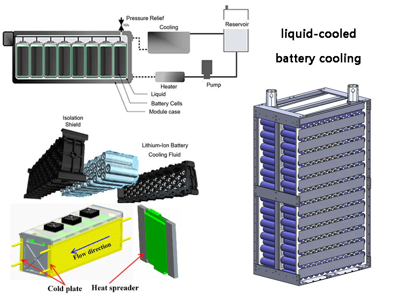
Liquid cooling leverages the high thermal conductivity and specific heat capacity of fluids to manage these thermal loads with precision, often maintaining cell-to-cell temperature differences within a 2°C to 3°C window.
Comparative Architecture and Thermal Performance
The choice between liquid and air cooling in the C&I sector is dictated by the specific application profile, energy density requirements, and the climate of the installation site. Air-cooled systems, which utilize fans to circulate conditioned air through the battery racks, are generally simpler to maintain and involve lower initial capital expenditures (CapEx).
In contrast, liquid cooling involves a closed-loop system where a coolant—most often a mixture of water and ethylene glycol (WEG) or a dielectric fluid—circulates through cold plates in direct contact with the battery modules.
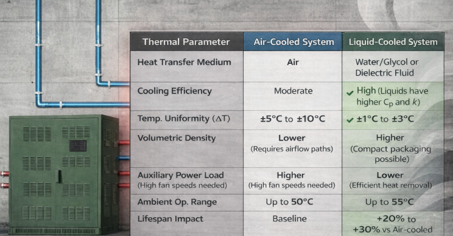
Mechanical and Hardware Engineering Requirements
The hardware requirements for a liquid-cooled BESS encompass the entire coolant loop, including the liquid cold plates (LCP), circulation pumps, chillers, expansion tanks, and the piping infrastructure. Each component must be engineered for chemical compatibility, pressure resistance, and thermal efficiency.
Liquid Cold Plate (LCP) Design
The LCP is the most critical hardware component, serving as the heat sink that draws thermal energy directly from the cells. LCPs are typically manufactured from aluminum, copper, or stainless steel. Aluminum is the industry standard for BESS due to its high thermal conductivity and relatively low weight, although it requires precise coolant chemistry and corrosion inhibitors to prevent galvanic degradation over the systems 15-to-25-year design life. The internal flow path of the LCP is optimized through computational fluid dynamics (CFD) to balance heat transfer against the pressure drop ($Delta P$).
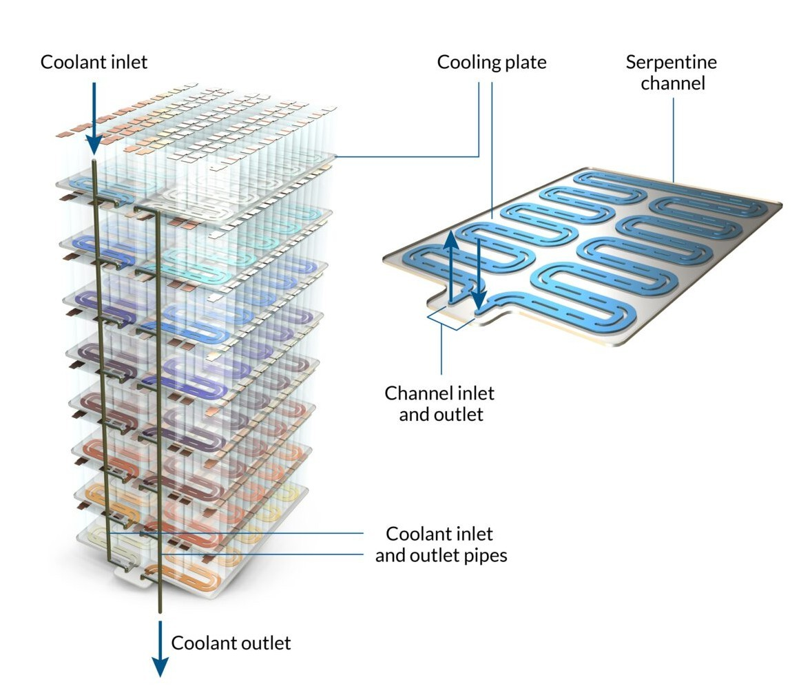
Different flow architectures provide varying levels of efficiency:
- Serpentine Tube Plates: Use a continuous tube embedded in an aluminum plate. They are cost-effective and robust but can lead to a significant temperature rise of the coolant from the inlet to the outlet.
- Manifold/Parallel Flow Plates: Distribute the coolant across multiple parallel channels, ensuring more uniform cooling across the entire surface of the plate.
- Mini and Micro-Channel Plates: Utilize very narrow channels to maximize the surface-area-to-volume ratio. While these offer the highest heat transfer coefficients, they are more susceptible to clogging and require higher pump pressures.
Cooling Units and Heat Exchangers
The heat absorbed by the coolant must be rejected to the ambient environment. In I&C systems, this is typically achieved using a specialized chiller or a liquid-to-air heat exchanger. Chillers are categorized as either side-mounted (integrated into the enclosure door) or stand-alone (externally sited or internal to the container). Modern C&I BESS chillers are often designed to operate on high-voltage DC power (up to 800V) supplied directly from the battery system, which eliminates the need for complex power conversion and improves overall system reliability.
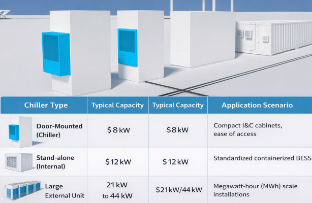
System Overall Architecture and Composition
1. Core component requirements
Liquid-cooled energy storage cabinet: It needs to integrate battery packs, BMS (Battery Management System), PCS (Power Conversion System), EMS (Energy Management System), liquid cooling temperature control system, fire protection system and power distribution unit, and adopt an integrated outdoor cabinet design.
Power and capacity: The single cabinet power range is 50kW~250kW, and the capacity is 100kWh~500kWh; the high-voltage side (10/20kV) grid connection requires matching transformer capacity.
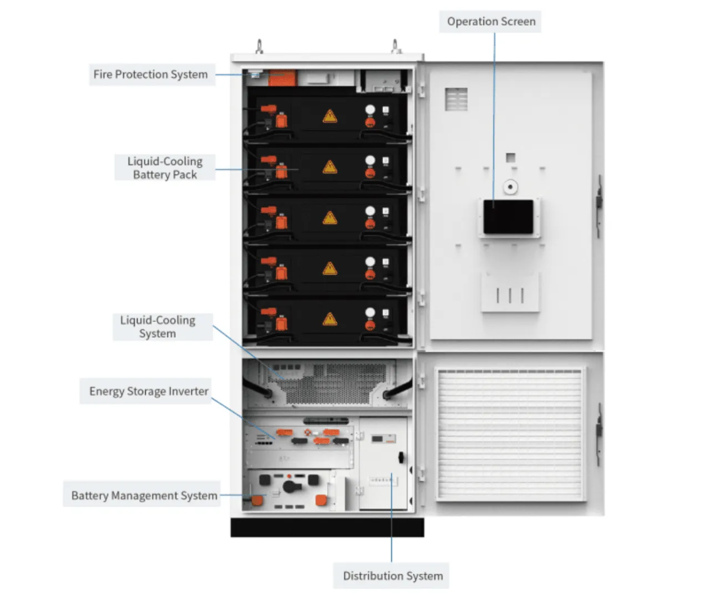
2. Environmental adaptability
Operating conditions: Temperature range: -30 °C to 50 °C; humidity: ≤95% (no condensation); altitude: ≤2000m (reduction required above 2000m).
Ingress Protection and Corrosion Resistance: Enclosures must meet high protection ratings, typically IP55 NEMA 3R, to ensure they are weatherproof and dust tight. For systems deployed near industrial zones or coastal areas, corrosion resistance is paramount. Containers often utilize galvanized steel with a thick powder coating or fiberglass-reinforced skins to guarantee a 25-year service life.
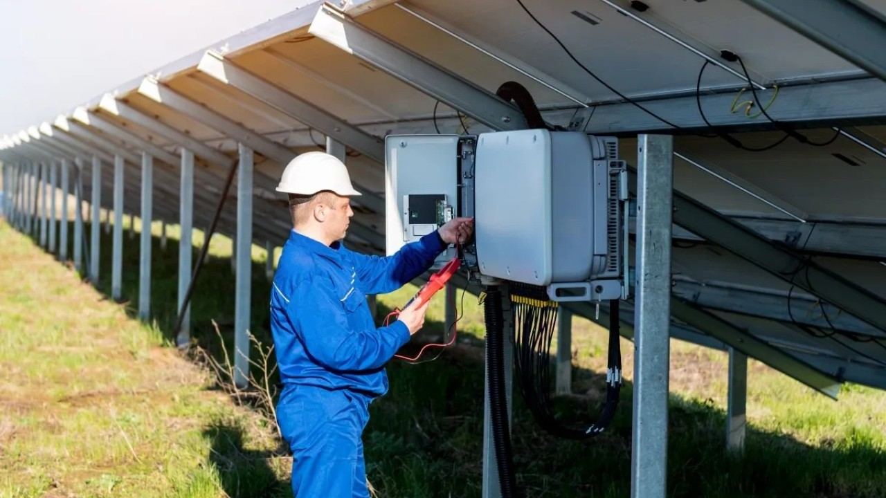
Key Technical Specifications of Liquid Cooling Systems
1. Heat dissipation performance and temperature uniformity
Cell temperature difference control: Within the same battery pack, the temperature difference between cells is ≤3°C, ensuring a lifespan extension of more than 20% (compared to air cooling).
Cooling working fluid: Use a liquid with high thermal conductivity and high stability (such as an aqueous solution of ethylene glycol) and replace and monitor the liquid level regularly.
2. Flow rate and energy efficiency
System energy efficiency: Initial energy conversion efficiency ≥90%, battery pack ≥93%, battery cluster ≥92%.
Flow design: It supports 1C charge/discharge rate based on dynamic adjustment of heat load (such as the Pylontech L2200OMNI system).
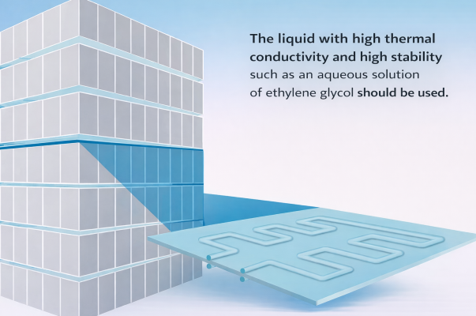
Safety Protection and Reliability
1. Electrical safety
Insulation resistance: Under a DC 2500V test, the insulation resistance of the battery cluster to the casing is >2MΩ.
Grounding resistance: The grounding resistance of the equipment casing is ≤0.1Ω.
2. Battery safety protection mechanism
Voltage/current protection: When there is overvoltage/undervoltage in the battery cell, overcurrent charging/discharging in the pack, or excessive voltage at the cluster level, the system must trigger protection and issue an alarm within 2 seconds.
Fire protection system: It comes standard with multi-level fire detection (smoke detector + heat detector) and automatic fire extinguishing device (such as heptafluoropropane or perfluorohexanone) and is linked with BMS to achieve second-level response.
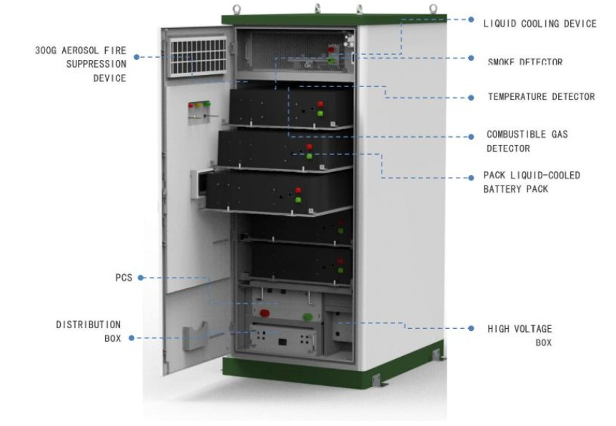
3. Structural safety
Cabinet material: The surface has an anti-corrosion coating, the welds are firm and crack-free, and the seismic design complies with the vibration test.
Intelligent Management and Operation
1. Monitoring and Communication
Display function: It displays key parameters such as SOC, temperature, and fault codes in real time.
Communication interface: Standard configuration includes RS485/CAN/Ethernet interfaces, supports Modbus protocol, and reserves redundant interfaces.
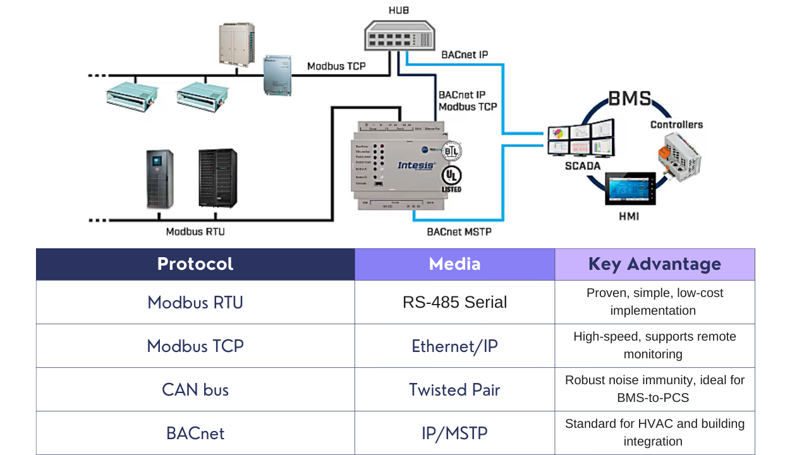
2. Operational Efficiency and Grid Interconnection
In regional hubs such as Delhi, the deployment of BESS must align with strict grid code requirements. The Delhi Electricity Regulatory Commission (DERC) and Delhi Transco Limited (DTL) have established protocols for interconnection at 33kV and 11kV levels. These include requirements for voltage ride-through (VRT) and frequency ride-through (FRT) to ensure that the BESS supports the grid during disturbances rather than disconnecting and potentially causing a cascading failure.
Utilities like Tata Power-DDL (TPDDL) have successfully deployed 10MW/10MWh systems that utilize advanced control systems for energy arbitrage, frequency regulation, and distribution deferral. These systems demonstrate the economic value of liquid-cooled BESS, providing high-speed response (millisecond precision) to grid fluctuations while maintaining stable operation across the city’s extreme summer heat.
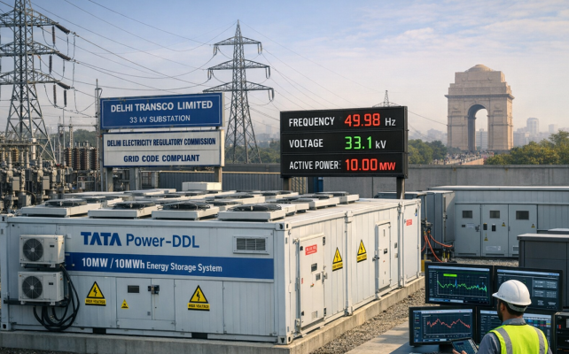
Testing, Certification, and Compliance
1. Performance testing
Initial efficiency verification: The charge-discharge cycle test at 25 °C conforms.
Thermal management test: The stability of the liquid cooling system was verified by starting at -30°C and operating at full load at 55°C.
2. Certification Requirements
International Certification: Exported systems must pass certifications such as IEC 62619, UL 9540, and UN 38.3. The global benchmark for energy storage safety is UL 9540, which evaluates the ESS as an integrated system, including the battery, PCS, and thermal management. Complementing this is UL 9540A, which specifies the test method for evaluating thermal runaway fire propagation. Liquid-cooled systems are often designed to leverage UL 9540A data to justify higher energy densities and reduced separation distances between units.
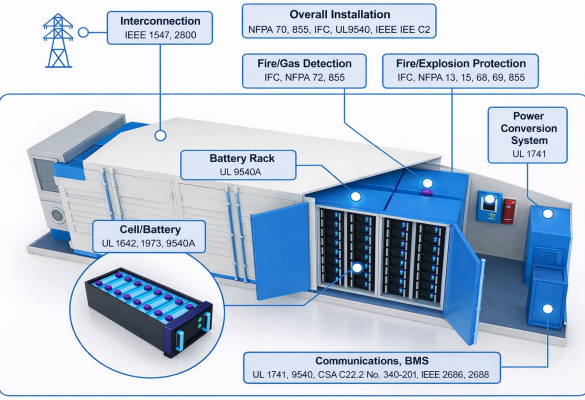
Indian Regulatory Context: CEA and BIS: In India, the Central Electricity Authority (CEA) and the Bureau of Indian Standards (BIS) define the technical and safety landscape for BESS. The Draft CEA (Measures Relating to Safety and Electric Supply) Regulations 2025 introduce specific requirements for liquid-cooled systems:
- Leakage Mitigation: Coolant lines must be routed and secured to prevent leakage onto live electrical parts.
- Two-Fault Tolerance: The battery system must be designed to remain safe even after two independent faults have occurred (e.g., a BMS sensor failure followed by an LCU pump failure).
- Automatic Suppression: Containers with a rating of 200kWh or more must be equipped with a water-based automatic fire suppression system.
- Separation Distances: Battery containers must be located at least 7.5 meters from the nearest exterior wall or roof overhang.
- Hazard Detection: Systems must detect smoke, gas, heat, and flame.
The technical requirements for industrial and commercial liquid-cooled energy storage systems have evolved into a sophisticated blend of high-performance thermal management, proactive control systems, and stringent safety protocols. Liquid cooling is no longer just a high-end option; it is becoming the essential architecture for I&C applications requiring high energy density, long cycle life, and reliable operation in challenging climates. The integration of advanced BMS logic with predictive LCUs allows these systems to maximize their ROI by stacking multiple grid services while minimizing the thermal stress that leads to premature battery degradation.